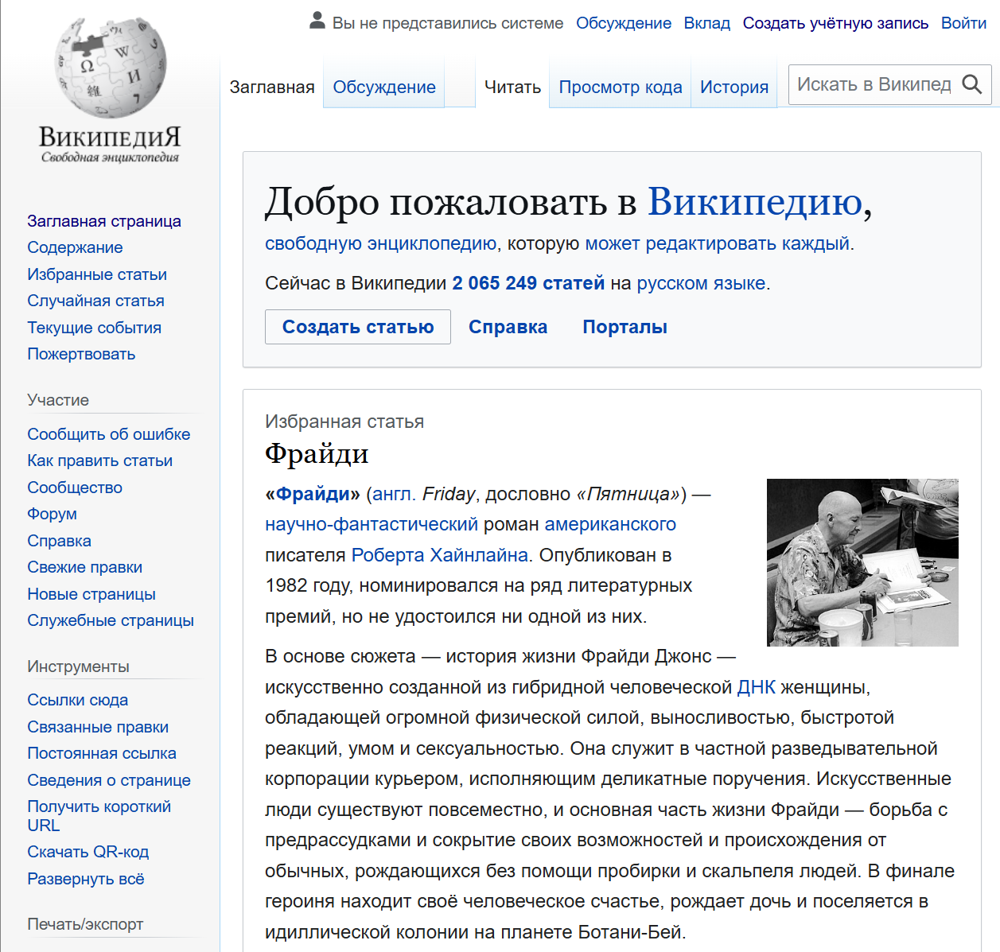
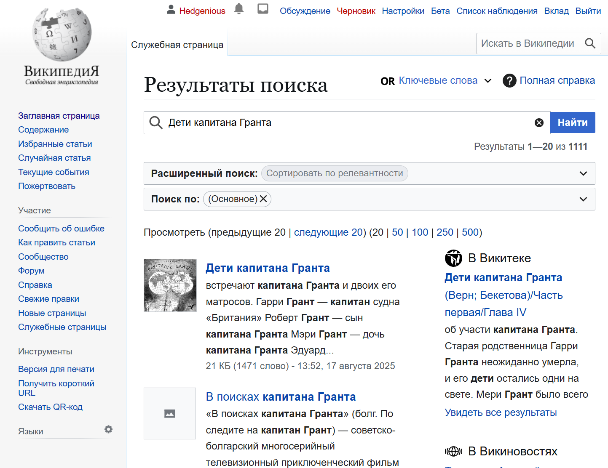
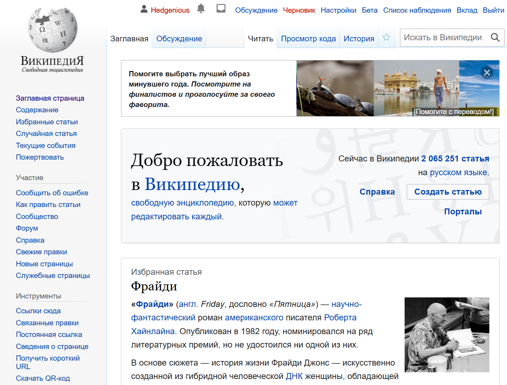
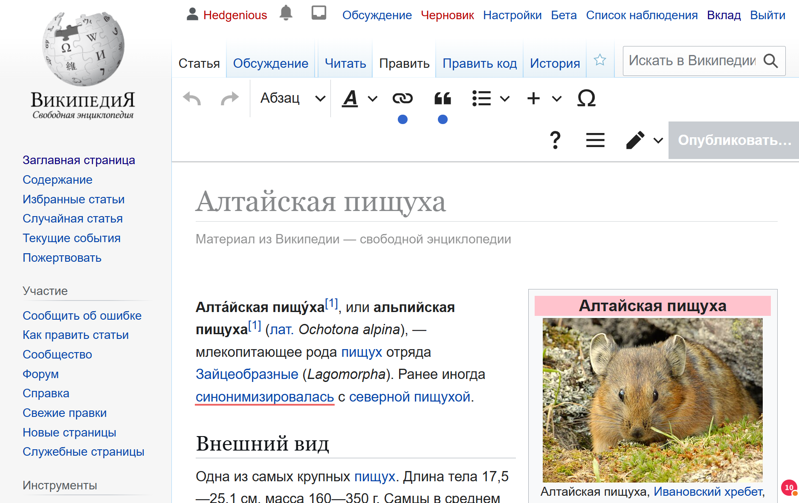
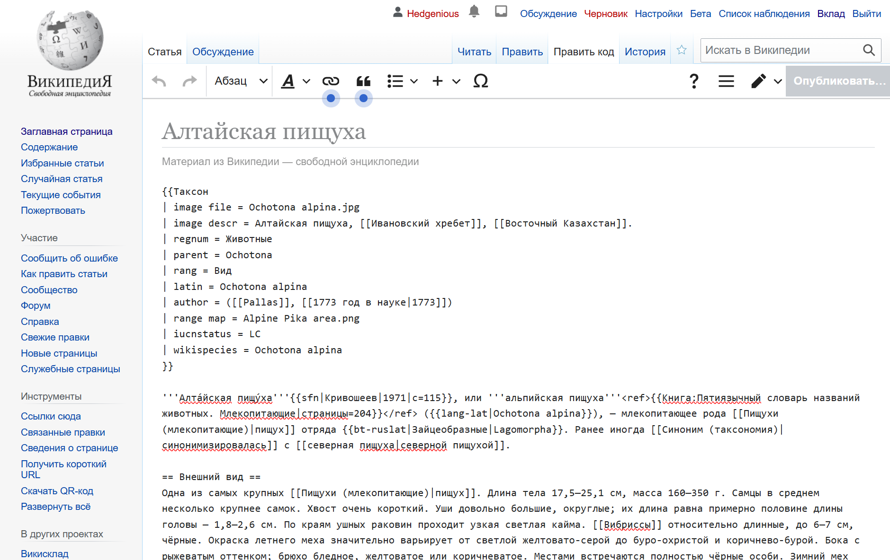
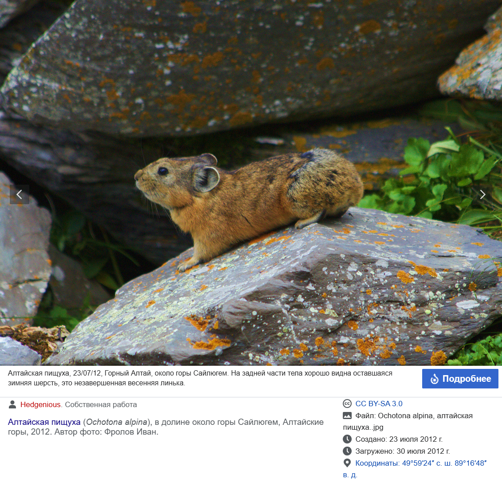
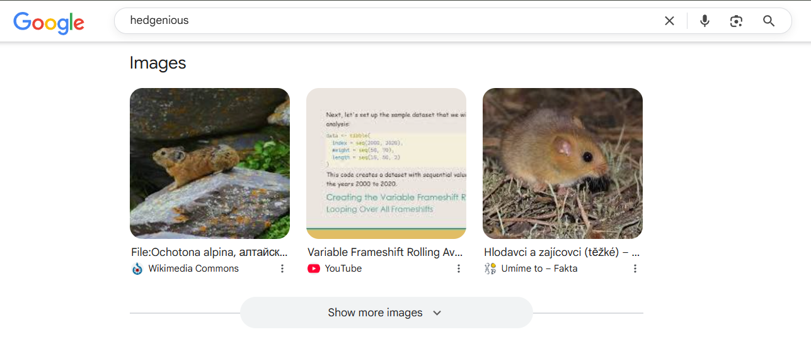
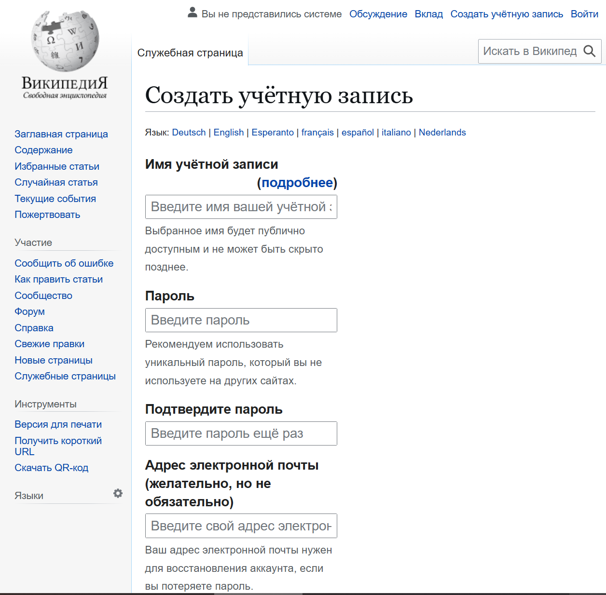

🎯 Цель этого руководства
Это руководство научит вас безопасно и правильно редактировать статьи в Википедии. Вы узнаете, как вносить изменения, добавлять источники и работать с вики-разметкой.
📋 Что вам понадобится
- Аккаунт в Википедии (если нет - создайте его)
- Базовые навыки работы с компьютером
- 1-2 часа свободного времени
- Желание помочь улучшить Википедию
🔍 Шаг 1: Поиск статьи для редактирования
Начните с поиска статей, которые можно улучшить:

Главная страница Википедии - здесь можно найти статьи для редактирования
Как найти подходящую статью
- Воспользуйтесь поиском на ru.wikipedia.org
- Выберите тему, которая вам интересна
- Найдите статьи с пометками "неполная" или "требует улучшения"
- Начните с небольших изменений

Пример успешного поиска в Википедии - найдено 1111 результатов по запросу "Дети капитана Гранта"
✏️ Шаг 2: Редактирование статьи
Теперь научимся вносить изменения:

Интерфейс Википедии для авторизованного пользователя - обратите внимание на дополнительные функции
Открытие редактора
- Найдите кнопку "Править" в верхней части статьи
- Нажмите на неё - откроется редактор
- Вы увидите вики-разметку статьи

Обычный визуальный редактор Википедии - рекомендуется для начинающих

Режим кода в Википедии - для тех, кто хочет посмотреть, как работает вики-разметка
🛠️ Два режима редактирования
В Википедии есть два способа редактирования статей:
1. Обычный редактор (рекомендуется)
- Визуальный интерфейс - как в Word или Google Docs
- Простота использования - не нужно знать вики-разметку
- Автоматическое форматирование - система сама добавляет нужные теги
- Подходит для начинающих - интуитивно понятный
2. Режим кода (для продвинутых)
- Прямое редактирование вики-разметки
- Полный контроль над форматированием
- Для опытных пользователей - нужно знать синтаксис
- Любопытно посмотреть - как работает система внутри
Основы вики-разметки
Заголовки
== Заголовок == - для разделов=== Подзаголовок === - для подразделов
Жирный и курсивный текст
'''жирный''' - жирный текст''курсив'' - курсивный текст
Ссылки
[[Название статьи]] - ссылка на другую статью[https://example.com Текст ссылки] - внешняя ссылка
📚 Шаг 3: Добавление источников
Источники - это очень важно в Википедии!

Пример качественной работы с изображениями - подробные метаданные помогают исследователям
Типы источников
- Книги - научные и учебные издания
- Статьи - из научных журналов
- Официальные сайты - правительственные и образовательные
- НЕ используйте: блоги, форумы, социальные сети

Поисковые системы показывают авторство изображений - это важно для соблюдения лицензий Википедии
Как добавить источник
- Найдите место в тексте, где нужен источник
- Добавьте
<ref>Источник</ref> - В разделе "Ссылки" добавьте
<references />
💾 Шаг 4: Сохранение изменений
Перед сохранением проверьте свои изменения:
Предварительный просмотр
- Нажмите "Предварительный просмотр"
- Проверьте, как выглядит статья
- Убедитесь, что всё правильно

Предварительный просмотр изменений
Описание изменений
- В поле "Описание изменений" кратко опишите, что вы изменили
- Например: "Исправлена опечатка", "Добавлен источник"
- Это поможет другим участникам понять ваши изменения
Сохранение
- Нажмите "Записать страницу"
- Ваши изменения будут сохранены
- Вы увидите обновлённую статью
🛡️ Правила безопасности
- Не добавляйте личную информацию
- Не копируйте текст из других источников без указания
- Проверяйте факты перед добавлением
- Будьте вежливы с другими участниками
🎨 Продвинутые техники
Создание новых статей
- Найдите тему, которой нет в Википедии
- Убедитесь, что тема значима и энциклопедична
- Соберите надёжные источники
- Создайте черновик статьи
Работа с изображениями
- Загружайте только собственные фотографии
- Указывайте правильные лицензии
- Следуйте требованиям к качеству
🆘 Решение проблем
Изменения не сохраняются
- Проверьте подключение к интернету
- Убедитесь, что вы вошли в систему
- Попробуйте ещё раз через несколько минут
Конфликты редактирования
- Если кто-то редактирует статью одновременно
- Сохраните свои изменения в текстовом файле
- Обновите страницу и внесите изменения заново
📚 Что дальше?
После освоения редактирования изучите: